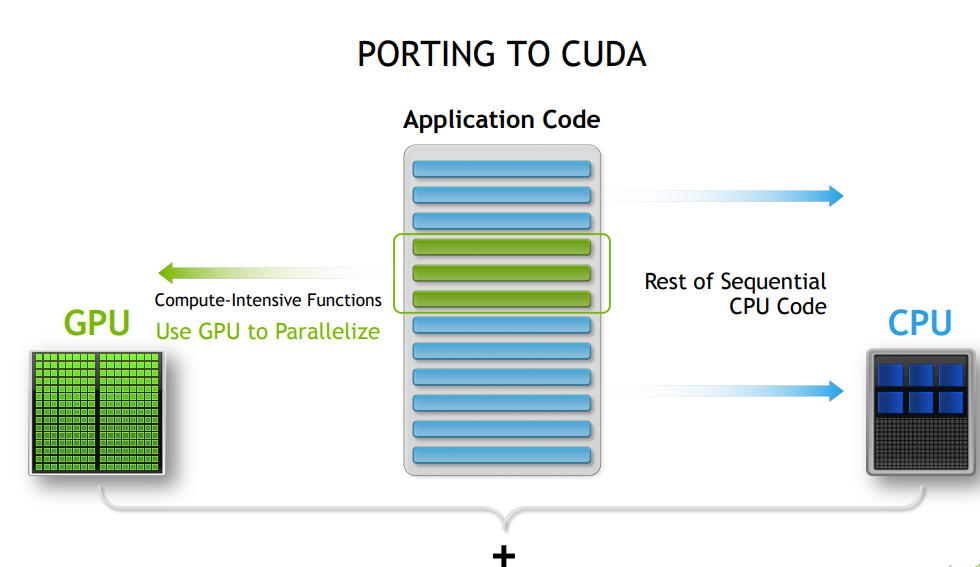
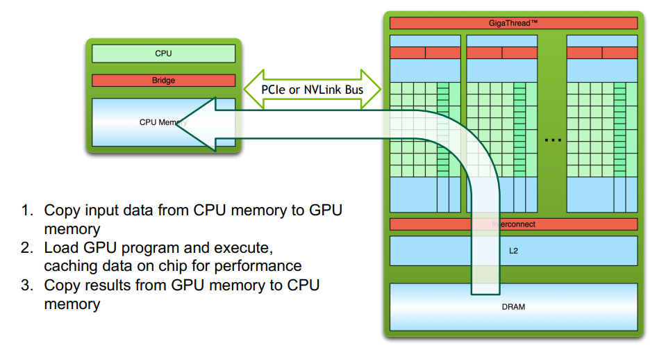
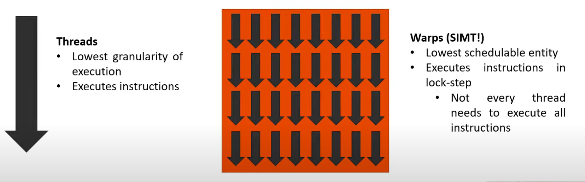
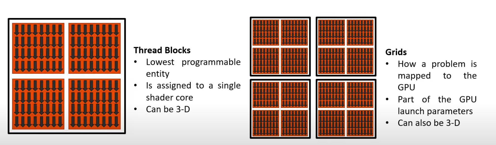
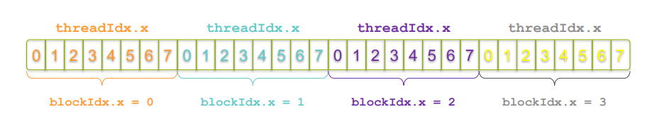
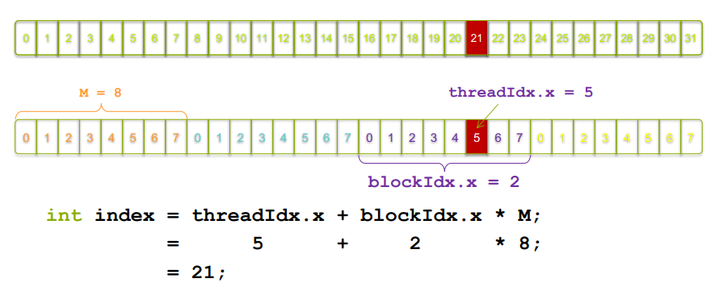

CUDA 编程（一）
2024-03-18
摘要
1.cuda 编程模型基本概念
2.cuda C++ 基本 api
3.并行向量加法实现
4.并行向量乘法实现
一、基本概念
CUDA（Compute Unified Device Architecture）是由NVIDIA开发的并行计算平台和编程模型。该编程模型是一个异构模型，需要 CPU 和 GPU 协同工作，以下为该编程模型的重要概念
- Host : CPU 及其内存
- Device : GPU 及其内存
Host 和 Device 硬件架构不同，各自拥有独立的物理内存空间，CUDA 应用程序也由 Host 代码 和 Device 代码组成：

注意，因为两者内存空间独立，因此当程序在两者之间转换执行时，需要进行数据迁移，切换的基本流程为：

- Kernel : 在 Device 的线程中并行执行的函数
- Thread ：线程，最小的执行单元
- Warps：线程束，最小的分配单元，包含 32 个线程
- Block：线程块，最小的可编程实体
- Grid：网格，由线程块组成   上面四个概念的范围由小到大，其中也涉及到 GPU 的硬件构造：
- kernel 在 device 上执行时实际上是启动很多线程并行执行，一个 kernel 所启动的所有线程称为一个网格(Grid)，同一个网格上的线程共享相同的全局内存空间，而网格又可以分为很多线程块(Block)，一个线程块里面又包含很多线程。
- GPU硬件的一个核心组件是 SM（Streaming Multiprocessor, 流式多处理器），采用的是SIMT(Single-Instruction, Multiple-Thread，单指令多线程) 架构，基本的执行单元是线程束，包含32个线程。这些线程同时执行相同的指令，但是每个线程都包含自己的指令地址计数器和寄存器状态，也有自己独立的执行路径。所以尽管线程束中的线程同时从同一程序地址执行，但是可能具有不同的行为，比如遇到了分支结构，一些线程可能进入这个分支，但是另外一些有可能不执行，它们只能死等，因为GPU规定线程束中所有线程在同一周期执行相同的指令，线程束分化会导致性能下降。
- 线程块被分配到SM上，一个线程块只能在一个SM上被调度，SM一般可以调度多个线程块。由于SM的基本执行单元是包含32个线程的线程束，所以block大小一般要设置为32的倍数。
- 每个线程有自己的私有 本地内存(Local Memory)，而每个线程块有包含 共享内存(Shared Memory)可以被线程块中所有线程共享，其生命周期与线程块一致。此外，所有的线程都可以访问 全局内存(Global Memory)
Kernel 的线程由 Grid 和 Block 划分为两个逻辑上层次结构，这两个层次可以灵活地定义为1-dim，2-dim以及3-dim结构，下面是一个 Grid 和 Block 都是两维，为以下结构的示例（可以看作坐标系水平方向为 x 轴，y 轴竖直向下）
据此可以对 Grid 中的每个线程可以根据两个内置的坐标变量（blockIdx，threadIdx）进行唯一标识，这两个变量 dim3 类型的变量，其中 blockIdx 指明线程所在 Grid 中的位置，而 threaIdx 指明线程所在 block 中的位置，如图中的 Thread (1,1)满足：
// 所处的 block 在 grid 中的位置
blockIdx.x = 1
blockIdx.y = 1
// 自身在 block 中的位置
threadIdx.x = 1
threadIdx.y = 1
二、CUDA C++ 基本 API
__global__关键字
该关键字标识该函数将在 device 上执行；它可以从 host 代码或者其他 device 代码中调用。
NVCC将源代码分成 host 和 device 两部分，NVIDIA 编译器处理的 device 函数 （例如mykernel () )，而 host 函数由标准编译器处理（例如main ()）:
mykernel<<<1,1>>>();
三尖括号标记对 device 代码的调用，也称内核启动（kernel launch）；三尖括号内的参数是 CUDA 内核配置参数，对应 Grid 和 Block 的结构。这里即只有一个 block, block 里只有一个线程。
blockIdx和threadIdx
三维变量，分别用于获取线程在grid 和 block 中的位置。
- Device 的基本内存管理
\\ 在 device 上分配内存
cudaMalloc((void **)&d_a, size);
\\ 将数据从 host 内存拷贝到 device 内存
cudaMemcpy(d_a, a, size, cudaMemcpyHostToDevice);
\\ 释放 device 内存
cudaFree(d_a);
其中 cudaMemcpy 拷贝数据的方向，可由最后一个参数指定，取值可为：
- cudaMemcpyHostToDevice：从主机内存复制到设备内存。
- cudaMemcpyDeviceToHost：从设备内存复制到主机内存。
- cudaMemcpyDeviceToDevice：在设备内存之间进行复制。
- cudaMemcpyHostToHost：在主机内存之间进行复制。
三、并行向量加法实现
两向量相加，即将两向量对应位置上的元素相加，与其他位置数据不相关，非常适合进行并行化除处理；下面直接给出代码：
#include <iostream>
#include <math.h>
#define N (2048*2048)
#define THREADS_PER_BLOCK 512
__global__ void add(int *a, int *b, int *c, int n) {
int index = threadIdx.x + blockIdx.x * blockDim.x;
if (index < n)
c[index] = a[index] + b[index];
}
int main(void) {
int *a, *b, *c; // host copies of a, b, c
int *d_a, *d_b, *d_c; // device copies of a, b, c
int size = N * sizeof(int);
// Alloc space for device copies of a, b, c
cudaMalloc((void **)&d_a, size);
cudaMalloc((void **)&d_b, size);
cudaMalloc((void **)&d_c, size);
// Alloc space for host copies of a, b, c and setup input values
a = (int *)malloc(size); random_ints(a, N);
b = (int *)malloc(size); random_ints(b, N);
c = (int *)malloc(size);
// Copy inputs to device
cudaMemcpy(d_a, a, size, cudaMemcpyHostToDevice);
cudaMemcpy(d_b, b, size, cudaMemcpyHostToDevice);
// Launch add() kernel on GPU
add<<<(N + M-1) / M,M>>>(d_a, d_b, d_c, N);
// Copy result back to host
cudaMemcpy(c, d_c, size, cudaMemcpyDeviceToHost);
// Cleanup
free(a); free(b); free(c);
cudaFree(d_a); cudaFree(d_b); cudaFree(d_c);
return 0;
}
上面代码有以下实现细节：
1.__global__ 函数中 index 的计算
__global__ void add(int *a, int *b, int *c, int n) {
int index = threadIdx.x + blockIdx.x * blockDim.x;
if (index < n)
c[index] = a[index] + b[index];
}
- 前面提到 kernel 函数将在多个线程中同时执行，也即程序并行计算的部分。对于向量加法的案例，每个线程负责将两个向量某一对应位置的数相加，因此，这里通过每个线程在 grid 中的唯一 ID 来映射到向量的 index，从而使得每个线程都能找到自己负责的数据进行计算。  
if (index < n)判断排除访问到越界数据，因为 device 上实际运行的线程数量可能多于向量的 size (因为最小的分配单元式线程束，32个线程)
2.调用 device 代码时 grid 维度的计算
这里 block 数量的计算方法为 (N + M -1) / M 而不是 N / M 是考虑当 N 不是 M 的倍数时，向上取整，否则实际启动的线程数将少于需要的线程数。
四、并行向量乘法实现
直接上代码，其中有一下地方值得借鉴：
- CUDA 错误检测：每个CUDA运行时 API 调用都会返回一个错误代码。严格检查这些错误代码是一种很好的做法(尤其是在遇到麻烦的时候)。给出的宏将使这项工作更容易。请注意内核调用后的特殊错误检查方法。
#include <stdio.h>
// these are just for timing measurments
#include <time.h>
// error checking macro
#define cudaCheckErrors(msg) \
do { \
cudaError_t __err = cudaGetLastError(); \
if (__err != cudaSuccess) { \
fprintf(stderr, "Fatal error: %s (%s at %s:%d)\n", \
msg, cudaGetErrorString(__err), \
__FILE__, __LINE__); \
fprintf(stderr, "*** FAILED - ABORTING\n"); \
exit(1); \
} \
} while (0)
const int DSIZE = 4096;
const int block_size = 16; // CUDA maximum is 1024 *total* threads in block
const float A_val = 1.0f;
const float B_val = 2.0f;
// matrix multiply (naive) kernel: C = A * B
__global__ void mmul(const float *A, const float *B, float *C, int ds) {
int idx = threadIdx.x+blockDim.x*blockIdx.x; // create thread x index 行
int idy = threadIdx.y+blockDim.y*blockIdx.y; // create thread y index 列
if ((idx < ds) && (idy < ds)){
float temp = 0;
for (int i = 0; i < ds; i++)
temp += A[idx*ds+i] * B[i*ds+idy]; // dot product of row and column
C[idy*ds+idx] = temp;
}
}
int main(){
float *h_A, *h_B, *h_C, *d_A, *d_B, *d_C;
// these are just for timing
clock_t t0, t1, t2;
double t1sum=0.0;
double t2sum=0.0;
// start timing
t0 = clock();
h_A = new float[DSIZE*DSIZE];
h_B = new float[DSIZE*DSIZE];
h_C = new float[DSIZE*DSIZE];
for (int i = 0; i < DSIZE*DSIZE; i++){
h_A[i] = A_val;
h_B[i] = B_val;
h_C[i] = 0;}
// Initialization timing
t1 = clock();
t1sum = ((double)(t1-t0))/CLOCKS_PER_SEC;
printf("Init took %f seconds. Begin compute\n", t1sum);
// Allocate device memory and copy input data over to GPU
cudaMalloc(&d_A, DSIZE*DSIZE*sizeof(float));
cudaMalloc(&d_B, DSIZE*DSIZE*sizeof(float));
cudaMalloc(&d_C, DSIZE*DSIZE*sizeof(float));
cudaCheckErrors("cudaMalloc failure");
cudaMemcpy(d_A, h_A, DSIZE*DSIZE*sizeof(float), cudaMemcpyHostToDevice);
cudaMemcpy(d_B, h_B, DSIZE*DSIZE*sizeof(float), cudaMemcpyHostToDevice);
cudaCheckErrors("cudaMemcpy H2D failure");
// Cuda processing sequence step 1 is complete
// Launch kernel
dim3 block(block_size, block_size); // dim3 variable holds 3 dimensions
dim3 grid((DSIZE+block.x-1)/block.x, (DSIZE+block.y-1)/block.y);
mmul<<<grid, block>>>(d_A, d_B, d_C, DSIZE);
cudaCheckErrors("kernel launch failure");
// Cuda processing sequence step 2 is complete
// Copy results back to host
cudaMemcpy(h_C, d_C, DSIZE*DSIZE*sizeof(float), cudaMemcpyDeviceToHost);
// GPU timing
t2 = clock();
t2sum = ((double)(t2-t1))/CLOCKS_PER_SEC;
printf ("Done. Compute took %f seconds\n", t2sum);
// Cuda processing sequence step 3 is complete
// Verify results
cudaCheckErrors("kernel execution failure or cudaMemcpy H2D failure");
for (int i = 0; i < DSIZE*DSIZE; i++) if (h_C[i] != A_val*B_val*DSIZE) {printf("mismatch at index %d, was: %f, should be: %f\n", i, h_C[i], A_val*B_val*DSIZE); return -1;}
printf("Success!\n");
return 0;
}
参考资料
[1] CUDA编程入门极简教程
[2] CUDA-统一内存